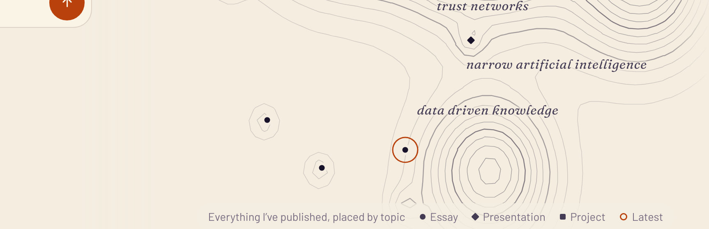
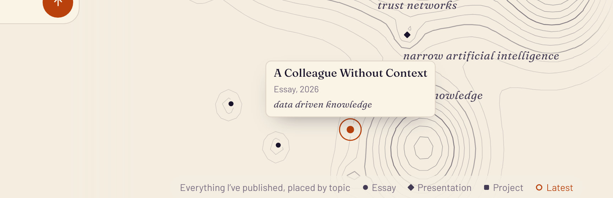
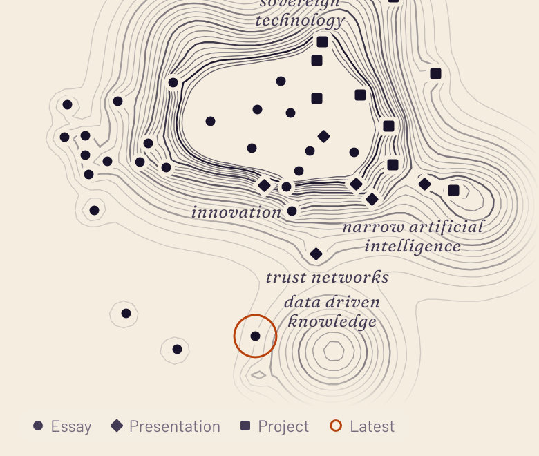
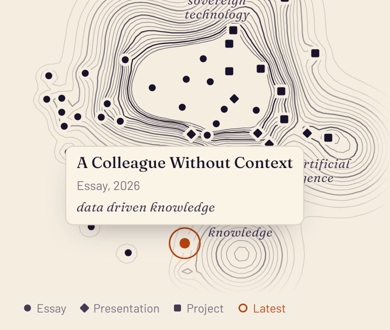
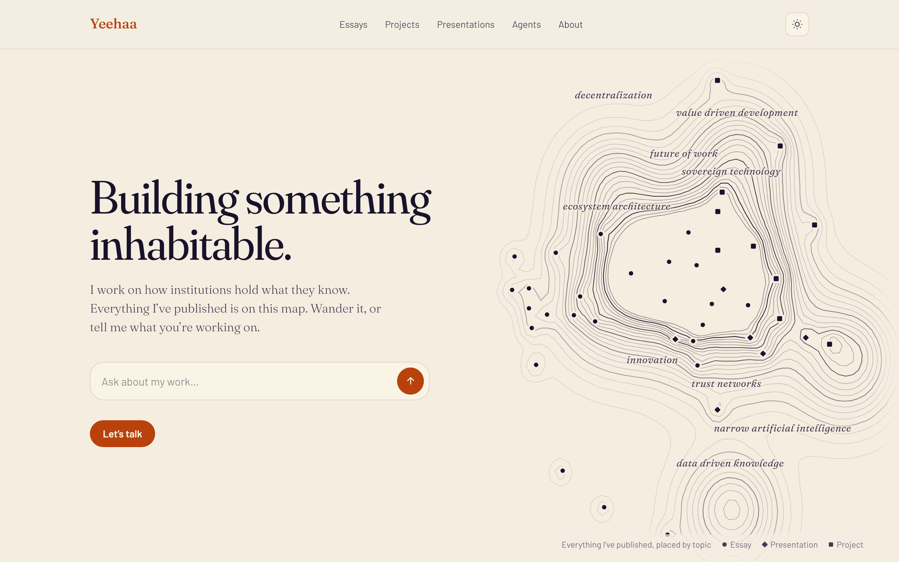
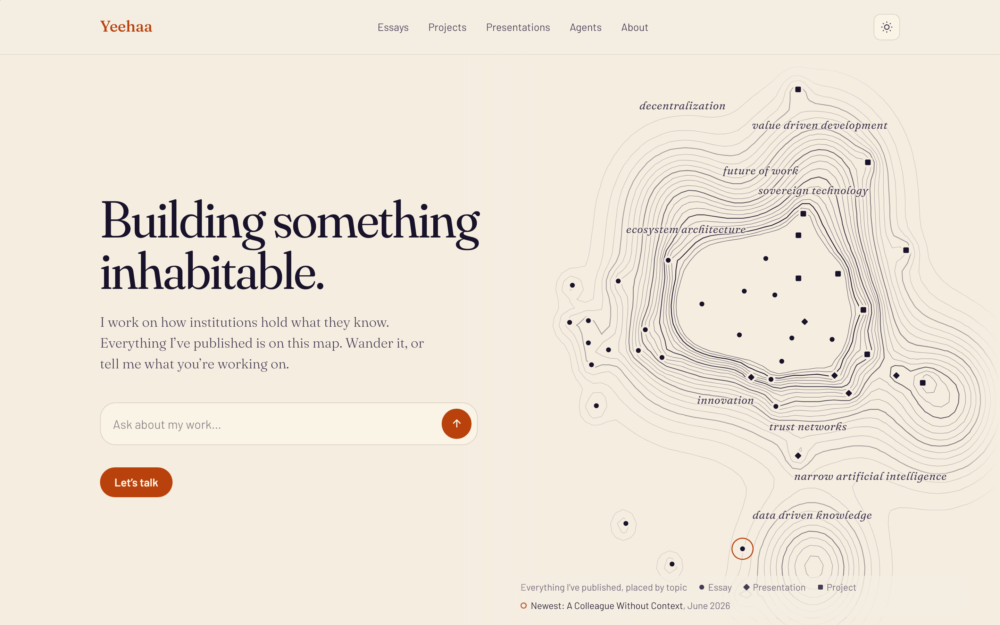
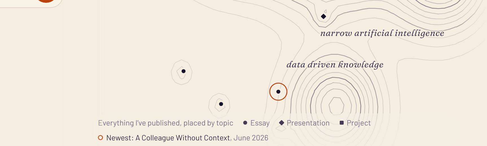
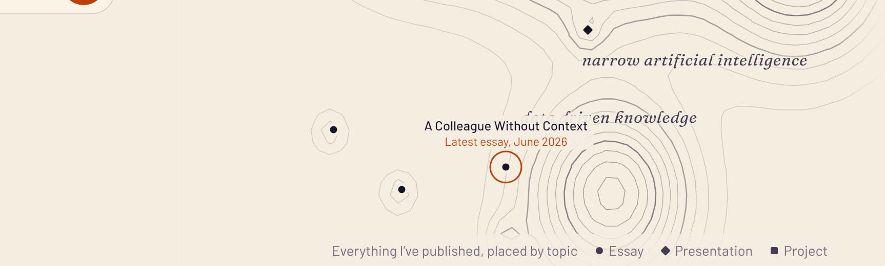
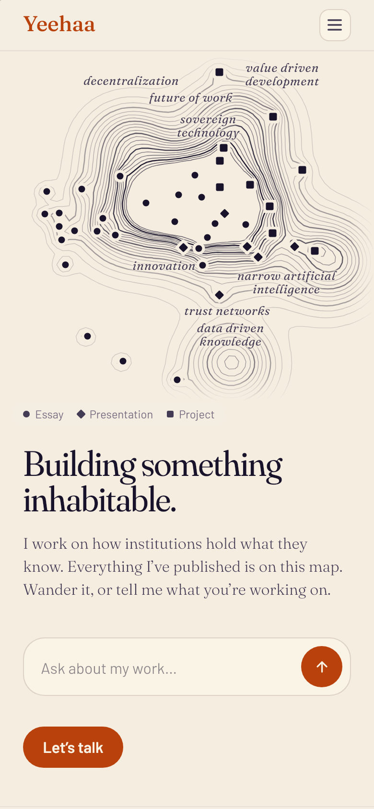

The most recently published piece gets a thin accent ring around its mark, drawn once as the page loads. Its shape and colour stay as they are, so it never reads as a piece the answer cites. Three ways to name it: a label on the map (A), the title in the legend (B), or just "Latest" in the legend, which opens the mark's card (C, recommended). Every picture is the live site in WebKit with yeehaa-latest-mark/proposal.css and proposal.js injected.
C (recommended): "Latest" in the legend
Desktop: the ring, and "Latest" as a legend key

Desktop: hovering "Latest" (or the mark) opens its card

Just "Latest"
The legend gains one key in the same voice as Essay, Presentation and Project: an accent ring, "Latest".
The title is one gesture away: hovering the mark or the key opens the piece's usual card; on a phone, tapping "Latest" opens it.
Fits on one line on desktop and phone, where B wraps to a second.
Phone: the ring and "Latest"

Phone: tapping "Latest" opens the card

On a phone
No hover, so the key is a button: tap it and the card opens over the map, tap elsewhere and it closes, as for any mark.
A and B, desktop
Now

B: ring on the map, named in the legend

B, close up

A: ring with a label above the mark

B: the legend names it
The ring is a new legend key, like the circle, diamond and square: "Newest: title, June 2026", linking to the piece.
Nothing new on the map but the ring, so it never covers a topic name or a neighbouring mark, wherever the piece lands.
Hover or tap the mark and its usual card opens, as for every piece.
A: a label on the map
Covers whatever is above the mark: here half of "data driven knowledge", on desktop and phone. Every placement collides somewhere as the map changes.
Both
Always the newest, with its month: the date tells a visitor how recent it is, so nothing is hidden after a quiet stretch. Today that is June.
Marks clear of the legend: this essay's mark sits under the legend today, half hidden and not hoverable on desktop. Here it is drawn just above; the build keeps every mark clear of the legend.
Reduced motion: the ring is there without drawing.
A and B, phone
Now

BA
On a phone
B adds one line under the legend, the only place a phone gives it room without covering the map.